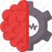

Principio da Programação
Buscar a solução de um determinado problema recebendo inputs e devolvendo outputs.
Etapas básicas para construção de um software
- Verificar problema / Definir solução.
- Criar descrição uma algoritmica.
- Implementar em linguagem computacional.
- Testes / Correções.
- Finalizar.
Programação
Algoritmo é uma sequencia de ações que visa atingir um propósito. Qualquer ou seja descrição de procedimento é um algoritmo.
E o algoritmo tem um algoritimo:
- Deve ter fim.
- Tudo deve ser realizado em um tempo finito.
- Deve ser claro quanto ao proximo passo.
- Deve gerar informação de saida.
O algoritmo recebera uma ou uma serie de informações realizara uma Operação e retornara uma outra informação.
Analise
Define "o que" da forma, cria entendimento, fornece dados iniciais.
É muito importante que a compreensão seja a mais afiada quanto possível.
Antes de tomar qualquer ação, é necessário analisar o ambiente de execução e seus objetos. Entrada e saida de dados.
Algoritmo
Define "como" relação dos entendimentos, trabalho parietal, criatividade, inovação.
Como os dados entrarão, qual o processo que deve ser realizado, e como dos dados finais serão apresentados.
Nesta etapa com base nas informações colhidas na analise do propósito é apresentado a estrutura algoritmica em fluxograma, português estruturado e descrição narrativa.
Codificação
Para que haja interação direta maquina x programador precisamos de uma Linguagem em comum, no caso o software de Programação.
Aplica o procedimento em linguagem computacional, "delega", realiza validações. O ato de delegar procedimento torna esses tipos de linguagem em Imperativas.
Neste momento é transcrito para códigos de linguagem de programação escolhida.
Escolha a linguagem de acordo com o desempenho abstrato do Algoritmo ex; Python para iot, R para estatística...
Evolução dos Codigos e formas
50's Assembly
Apesar de não ser a primeira linguagem criada nem a ter o primeiro compilador, foi a mais conhecida e a primeira permitir uma criação fácil de linguagens de alto nível. Como A base de tudo é o binário, basta que a primeira camada do compilador dessa esse dicionário de maquina para que outra linguagem mais refinada possa ser criada em cima da anterior.
Compilada e Interpretada
Como todo código deve necessariamente ser entendivel ao hardware no seu nível mais elementar o fluxo é binário, assim obrigando todo código de alto nível ser convertido em linguagem de maquina.
Então temos duas maneiras de fazer isso.
Compilada
O compilador realiza a conversão depois de não haver implicações Sintáticas. A grande vantagem é que depois o programa pode ser executado sem uma nova necessidade de compilação.
Interpretada
Já a interpretação é a conversão acontecendo conforme a necessidade de execução do programa. Toda vez que é executado existe a nova necessidade de reinterpretar.
Dados
Como vimos acima dados são essenciais para o funcionamento de um Algoritmo.
Tipo de dados
Os dados ou variáveis possuem características próprias
String
Literal ou caracteres, combinações alfanuméricas
Number
São divididos em dois grupos; inteiros e reais.
Boolean
Assume 2 valores Verdadeiro e Falso
Vetores
Coleção de informações.
Array ou Matrizes
Basicamente representam um conjunto de dados de mesmo tipo, armazenados na memoria através de um índice. Uma matriz de uma dimensão que guarda 3 posições inteiras. Uma matriz de duas dimensões que guarda 9 posições palavras. Quantidades respectivas a 3 linhas e 3 colunas. Uma matriz que guarda 27 posições reais. Respectivamente 3 linhas, 3 colunas e 3 profundidades.
Um Array pode ter varias dimensões e tudo isso é reflexível nos indices.
1D
inteiro nome_matriz [3]
2D
string nome_matriz [3][3]
3D
inteiro nome_matriz [3][3][3]
A primeira posição de um índice é 0 ou seja, um Array uni dimensional de duas posições [2] vai ter como indice posição 0 e 1.
Operadores
Aritméticos
Presentes na matemática:
+, -, *, /, **, %
Relacionais
igual a ==
diferente != ou <>
menor igual <=
maior igual >=
Lógicos
and relaciona premissas assim ambas precisam ser verdadeira para o resultado ser verdadeiro.
or relaciona premissa assim uma precisa ser verdadeira para o resultado ser verdadeiro.
not o resultado precisa ser falso para ter um retorno verdadeiro.
Estrutura de Processamento
Estrutura sequencial
Este tipo de estrutura é o mais simples seguindo a sequencia primordial de um algoritmo que é o recebimento e o processamento de dados retornando um valor final e é finalizado.
Estrutura Condicional
Condicional simples
Caso verdadeiro então comando é executado.
Condicional composta
Através de um analise inicial nos dados de entrada, se true um processo é tomado, se false outro comando é realizado.
Case
Se dado inicial for igual a caso 'x' o bloco é executado caso 'y','z'... seu respectivo bloco é executado.
Estrutura de Repetição
Utilizado quando um determinado algoritmo precisa ser repetido, pode estar atrelado a uma condição.
Caso a condição se inicie falsa o looping não sera executado.
Repetição com teste no inicio
enquanto(condição)
{comandos...}
Mesmo se iniciado com a condição falsa ele executara no mínimo uma vez.
Repetição com teste no final
faça
{comandos...}
enquanto(condição)
Geralmente é usado quando precisamos de uma quantidade especifica de repetições, mas tambem é possível em qualquer uma das anteriores.
Repetição com variável de controle
para(inicio_var; condições; incrementa var)
{comandos...}
Paradigmas de programação
Orientação a Objetos
Classes
Ao longo de varias idealizações de diversos tipos de software criou-se um conceito predominate até hoje a Orientação a Objetos o brilhantismo surge com a capacidade de abstrair os componentes do sistema permitindo a criação de um corpo estrutural sem o uso de elementos concretos, permitindo criar posteriormente, e caso esse elemento fique ultra passado basta alterar o encapsulamento responsável pelo mesmo.
Herança
Pensando pelo Darwinismo podemos compreender que todo animal tem um ancestral comum e esse ancestral detém características fundamentas presente em todos os seus sucessores. Por vez seus sucessores tem sua próprias características permitindo discernimento evolutivo.
Um exemplo pratico seria que somos da classe abstrata primatas, mas primatas em si não é acessível como objeto e sim como conjunto imaginário, humano é um primata, chimpanzés também e não podemos nos esquecer dos gorilas... todos esses herdam características e habilidades de seu antecessor na cadeia evolutiva.
Polimorfismo
Toda ação pode ser feita de varias formas, já que cada um prefere o que lhe convém.
Partindo deste principio voltamos ao ato de abstrair, "animal caça", com o que ferramenta?, onde?, o que?, perceba que o pensamento da caça pode ser abstraída retirando a necessidade de pré definir uma imagem inteira. Ainda sim existe um escopo global, quem caça, caça com alguma coisa, em algum lugar, caça algo...